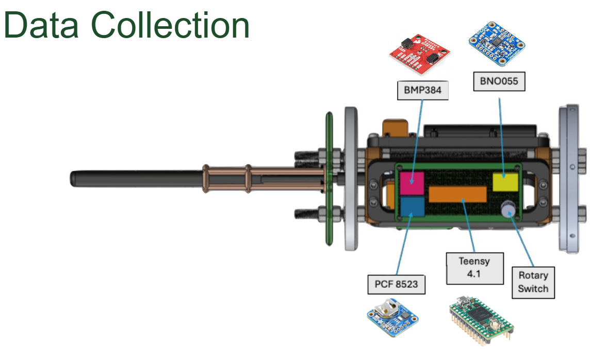
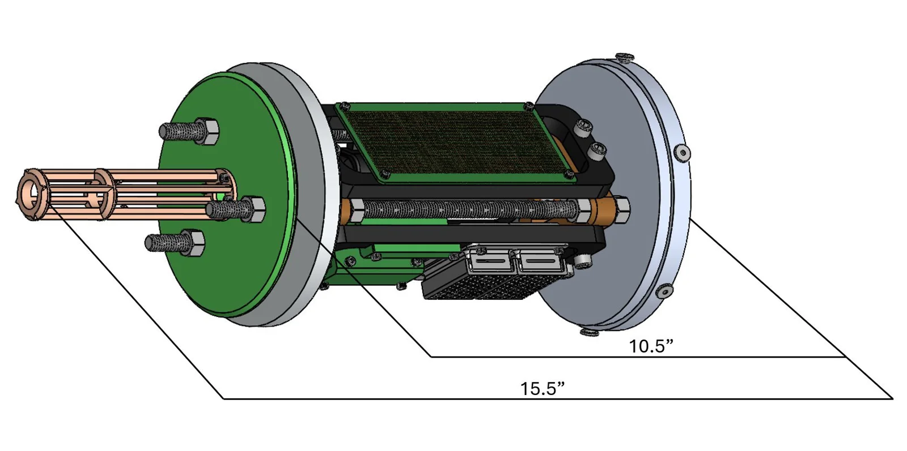
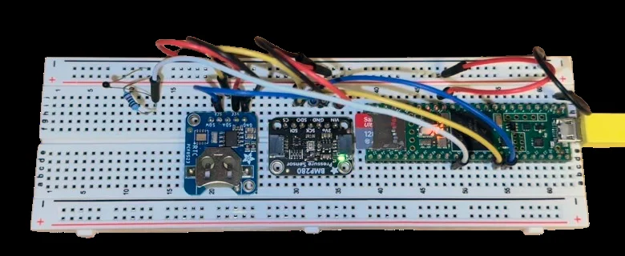
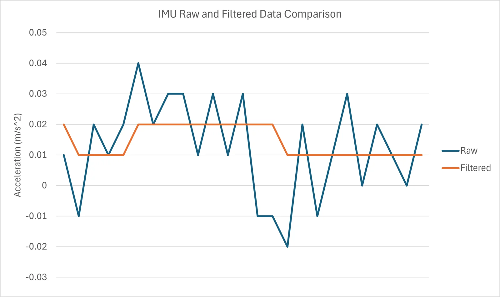
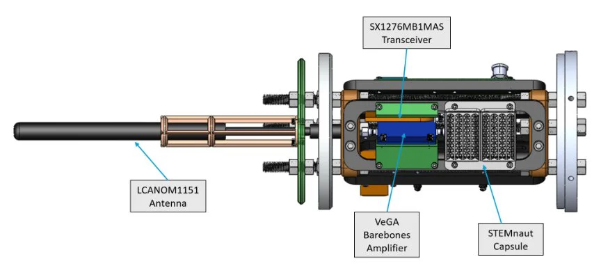

NASA University Student Launch
As Payload Bay Specialist for CSU’s 2024–25 NASA University Student Launch team, I worked at the interface between mechanical design and embedded electronics. My role centered on developing the payload-bay architecture, packaging its avionics, and ensuring the subsystem could be integrated into the larger launch vehicle.
My focus: Payload bay design, CAD, electronics schematics in KiCad and Fusion 360 Electronics, sensor testing and soldering, electronics packaging, system analysis, and design-review documentation.

- Microcontroller
- Teensy 4.1
- Sensors
- BNO055 IMU, BMP384 pressure, PCF8523 RTC, thermistor
- Transmission
- 144.39 MHz, 2,500 ft target range
- Schematic tools
- KiCad, Fusion 360 Electronics
Mission
The 2024–25 challenge was to design, build, and fly a reusable launch vehicle carrying a payload that collects, stores, and transmits data sets to a NASA-owned receiver. CSU’s design used a non-deployable payload in the forward section that recorded four data sets: apogee, landing-site temperature, time of landing, and maximum velocity.
Payload / Data collection
I designed and analyzed the payload bay assembly in SolidWorks and drew the payload electronics schematics in KiCad and Fusion 360 Electronics. The system integrated a Teensy 4.1 with a BNO055 inertial measurement unit, BMP384 pressure sensor, and PCF8523 real-time clock, requiring the mechanical layout and electronics to be developed together within the available payload volume.

Each data set came from a specific sensor and calculation. The BMP384 pressure reading gave apogee through the barometric formula, with a ±50 ft target. A thermistor gave landing-site temperature through the Steinhart-Hart equation, to ±5 °F. The PCF8523 real-time clock logged time of landing to ±5 s, and the BNO055 IMU sampled at 200 Hz to derive maximum velocity within 10%.

Sensor testing & soldering
The schematics were the reference for wiring a breadboard prototype and, later, for soldering the flight hardware. Before anything was soldered, I helped test the sensors on the breadboard to confirm each one communicated with the Teensy and returned sensible readings. Raw IMU acceleration was logged and compared against a filtered signal to check how much noise the velocity calculation would have to deal with. Once the sensors were validated, I helped solder them for integration into the payload.


Transmission system
After landing, the payload had to transmit its data at 144.39 MHz to a receiver 2,500 ft away while staying under 5 W. The chain ran from the battery through relays and a buck converter to an SX1276 transceiver, a VeGA Barebones amplifier, and an LCANOM1151 antenna, packaged in the payload sled alongside the data collection electronics.

Integration & design reviews
Beyond component packaging, I worked on subsystem-level integration and analysis leading into the Preliminary Design Review. This included evaluating the payload architecture, identifying integration constraints, and refining the avionics layout so the mechanical and electrical systems could function as a single flight-ready assembly.
The project gave me experience working within a formal aerospace design cycle rather than treating the payload as an isolated component. Design decisions had to account for interfaces with the airframe, avionics, competition requirements, and the work of other subsystem teams.
Competition & experience
CSU finished 7th overall out of 68 teams in the NASA University Student Launch competition. The project became one of my first experiences taking ownership of a rocket subsystem from CAD and electronics integration through formal design reviews and vehicle-level integration.